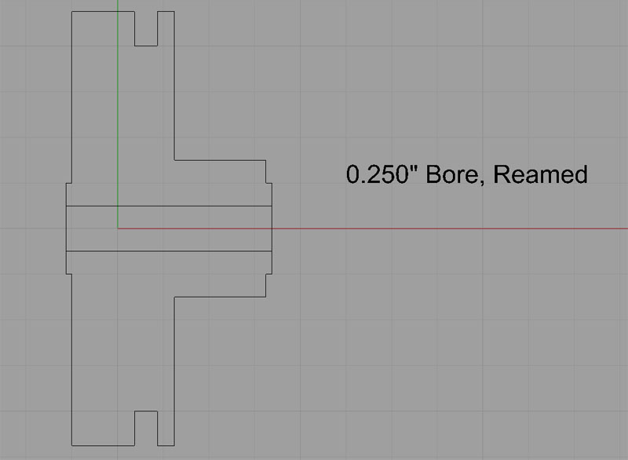
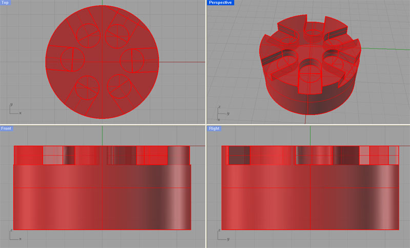
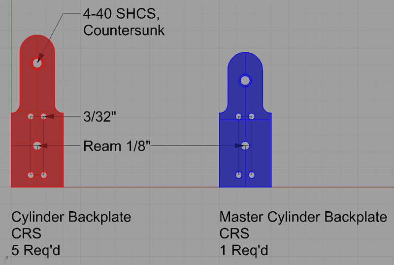
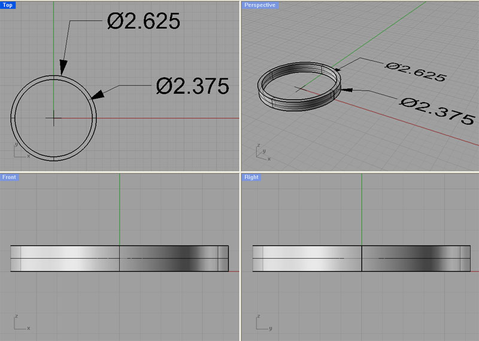
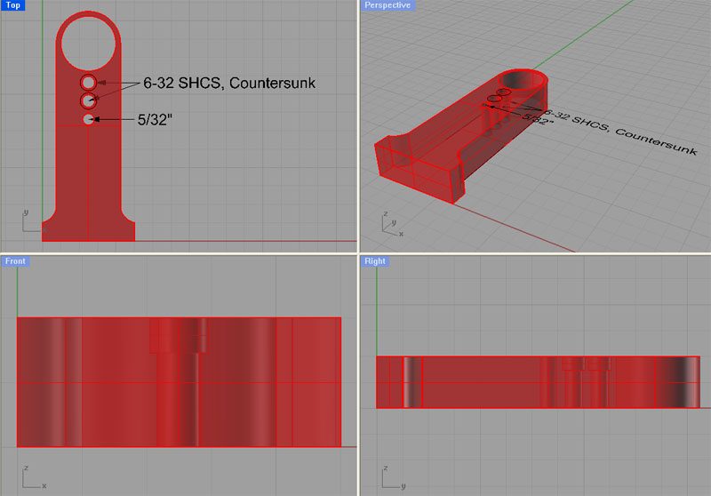
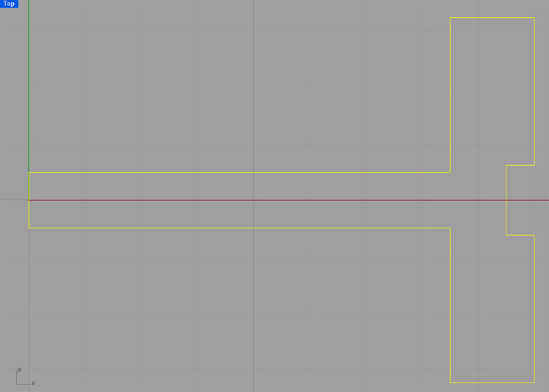
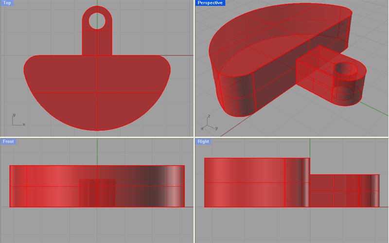
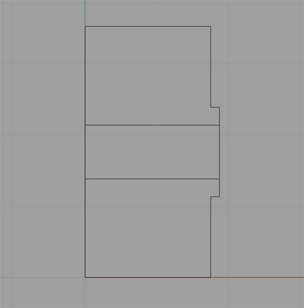
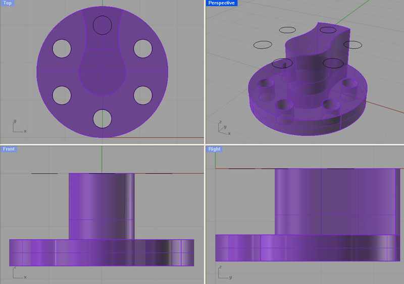
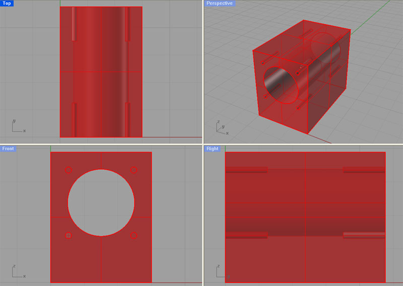

CNC'ing a Hula Hula Engine
Philip Duclos was the originator of a number of fascinating projects for the home shop machinist, but I fell in love with his "Hula-hula" engine after seeing it in a couple of places. It is essentially a 6-cylinder radial engine consisting of 6 little wobbler motors. What fun!
I decided this might make a good project to try to build with CNC tools. I started out doing the modeling in Rhino 3D quite a while before I got enough CNC capabilities to begin actual construction. These pages chronicle what progress I've made so far.
Engine Body
The first step is to make the engine body, which is a complicated little piece. Starting out on the lathe by turning the following profile:

A lathe profiling job and reamed center hole come first...
The dimensions are such that the finished piece has a diameter of 2 3/8" by 1 1/8" long, so a piece of round stock 2 5/8" by 1 3/8" long would allow sufficient material. I'm thinking a brass body would be very attractive for this piece. The recommended material is either aluminum or brass.
This will make a good starter project for my upcoming CNC Lathe Conversion!
Machining steps are as follows:
1. Chuck the material in the 4-jaw.
2. Drill the center hole with a 7/32" bit.
3. Ream to 0.250".
4. Profile the spigot and face the shoulder alongside the spigot.
5. Flip the workpiece around in the chuck, and dial it in good for concentricity on that reamed hole.
6. Profile the large OD and face the other side.
7. The last step is to cut the groove.
8. Once the body has been profiled, the real CNC fun begins--a series of 6 pockets have to be cut. This can all be done with a 1/8" end mill. Here's what the pockets look like:

Next is a pocketing job with a 1/8" end mill
Lastly, drill all required holes. Open Item!
It should be fine to hold this little piece in the Kurt vise. It might be nice to make up a set of aluminum soft jaws to make sure it's held tightly and without damage to the finish on the brass.
Cylinder Backplates
After the Engine Body has been completed, its time to make the Cylinder Backplates. I have modified these slightly from the original Hula Hula to take advantage of the arbitrary curves that are easy to cut with CNC and the precision with which holes can be located. A total of 6 pieces are needed, but 1 of the 6 is for the master cylinder, and is different, so 5 regular cylinder backplate pieces are needed and 1 (shorter) master cylinder backplate is needed. For those who are so minded, the backplates can all be assembled on a fixture and cut out of 1 sheet since each piece has 2 holes in it that can serve to bolt down the piece. Here are the Rhino drawings of the cylinder backplates:

Cylinder Backplates...
These pieces are 3/4" wide by 2 to 2 1/4" tall, and are made of 1/4" cold rolled steel plate. The faces should be flycut (or ground if you prefer and have a surface grinder) so they have a fine finish.
Machinework will proceed as follows:
1. Flycut the 1/4" plate on both sides.
2. Clamp the 1/4" plate atop a fresh fixturing plate. Be sure the fixture plate is held in place with its own set of clamps.
3. Using CNC, drill the 4-40 socket head capscrew holes and drill and ream the 1/8" holes. This will have to be done in stages:
a. Spot and drill holes for tapping to full depth into the fixture plate.
b. Drill 4-40 hole.
c. Drill hole that will be reamed 1/8". Drill it undersize to leave some material for the reamer.
d. Tap all holes using a tapping head under CNC control.
e. Ream the 1/8" holes.
f. Countersink the 4-40 holes.
4. Bolt down the 1/4" CRS atop the fixture plate using the newly created holes. Remove the clamps from the CRS, and leave the clamps on the fixture plate.
5. Profile the outlines of the cylinder backplates with a 1/2" 4-flute center cutting end mill.
Next, we have a couple of ticklish operations. The internal passages for intake and exhaust have to be drilled. I'm planning to hold each piece vertically in a set of soft jaws designed for the purpose in the Kurt vise. 2 fairly deep holes have to be drilled, and they must line up properly, so the soft jaws have to hold the backplates well enough so things will line up. I'm envisioning soft jaws with rectangular pockets cut 0.200" deep to hold one of these backplates standing vertically. If you want to get fancy about production and minimizing setups, there is no reason a 6" vise can't accomodate all 6 backplates with a good set of soft jaws made for the purpose.
With the two deep holes drilled, the backplates are finished. Deburr them and set them aside, or, if you like, bolt them to the Body using the 4-40 socket head cap screws and admire your work.
Open Item: Need to indicate the drilled and plugged steam passage hole.
Manifold Band
The Manifold Band is just a ring that covers and seals the groove around the outside of the Body. I would make it from aluminum or 12L14 steel as follows:
1. Place a length of 2.75" to 3" diameter stock in your 3-jaw or 6-jaw lathe chuck such that at 0.75" or so protrudes beyond the chuck jaws.
2. Drill a hole to start the boring process on the center. I recommend the largest bit you have available. A 1" Silver and Deming, for example, will save some time boring later.
3. Turn to OD and face.
4. Bore the central 2 3/8" hole with a boring bar.
5. Part off the ring.
6. Drill and tap for the 5-40 set screw.
Done!

Manifold Band is just a ring...
Body Pillar
Next up is the Body Pillar, which attaches the Engine Body to the Engine Base:

This is a straightforward profiling job. The Body Pillar will be bolted to a fixture plate in much the same way as the Cylinder Backplates. If desired, more than one Body Pillar can be manufactured at once.
Machining Operations:
1. Clamp a piece of 1/2" MIC-6 (or similar) aluminum plate atop a fixture plate. You'll need at least 3 1/4" x 1 3/8" per Body Pillar. Be sure the fixture plate is held in place with its own set of clamps.
3. Using CNC, drill the 6-32 socket head capscrew holes and drill the 5/32" hole. This will have to be done in stages:
a. Spot and drill holes for tapping to full depth into the fixture plate.
b. Drill 6-32 holes.
c. Tap all holes using a tapping head under CNC control.
e. Countersink the 6-32 holes.
4. Bolt down the 1/2" plate atop the fixture plate using the newly created holes. Remove the clamps from the CRS, and leave the clamps on the fixture plate.
5. Profile the outlines of the Body Pillars with a 1/2" 4-flute center cutting end mill.
Make up some soft jaws to hold the Body Pillars on end and on one side to drill the remaining holes.
This would be a good time to trial fit the Engine Body into the Body Pillar and just make sure everything is sympatico.
Crankshaft
The crankshaft will require the use of both the lathe and the mill. First, we must cut the profile from a piece of 2" x 3" CRS stock on the lathe:

Crankshaft Profile...
I intend to start out cutting the slender shaft and face the big shoulder, then flip the piece around to finish the large diameter of the flywheel. Deburr the ends each operation.
Now take the newly turned piece and place it in a collet block. Set the collet block upright in the Kurt vise of your mill. Using a 1/8" 4-flute end mill, profile the large diameter end according to this model:

Ream the 3/16" hole. Turn the collet block on its side and make two passes to square the 1/8" radius that blends the smaller part to the larger part so you get a square edge similar to what's in the Rhino drawing.
Secure a 3/16" x 3/4" dowel pin in the reamed hole using Loctite or silver solder.
Master Crankpin Unit
Begin the Master Crankpin Unit on the lathe. We want to turn a piece of CRS that starts out with a 1" diameter, and 3/4" clear of the lathe jaws for turning. Turn the following profile and ream the center hole 3/16":

Machine in the lathe the end with the slight spigot, drill and ream. Part off leaving room to face it to size. Don't bother flipping and facing--we'll machine the opposite face in the mill.
Next we want to machine a profile on the mill as well as drilling some holes. This piece could be held in a collet block or soft jaws, your choice. Set it up in the mill, face mill it to the right height, and then profile it using a 1/8" end mill:

Drill and ream the holes. Drill and tap the 4-40 hole. There is a hole that goes in the side of the piece we've profiled. Turn the piece up on end and drill that hole manually.
Open Item : 3D model is missing the 4-40 tapped hole and the center 3/16" reamed hole!
Cylinders
Next stop is to make 6 cylinders. I plan to make mine from steel or aluminum so it contrasts with the brass that I'll use for the Cylinder Heads and the Engine Body. Each finished cylinder is 0.970" x 3/4" x 1.190". So, a piece of 1" square stock with 1.5" per cylinder ought to work for this.
The cylinders are to be made up on the mill. They need to be squared to size, and then a 0.5" bore made. Each end of the cylinder then gets drilled and tapped for the 2-56 bolts that hold the cylinder heads on:

Once the each cylinder has been squared, bored, and drilled, the next step is to drill the passages for the steam.
Notes
1. Recheck hole diameters on holes that are to be tapped.